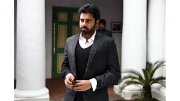

BLOGS
BLOGGINGWITH VAMSHI
PAWANISM
Hello all,
Here i am going to talk about power star pawankalyan.
powerstar pawankalyan is a south indian actor,director,producer,politician,writer.
he is a versatile person who is down to earth.
he had a large fan base in south indian.although he had not done any film in other languages,he had got many fans there through his dubbed films.
he is such a good person who has given his remuneration to many ngo's.
he founded a party named "janasena" in andrapradesh and telangana in the year 2014.
the actor turned politician is presently stopped doing films and concentrated on serving the people.
he contested in the latest assembly elections in AP and lost.
SEP2nd is his birthday.powerstar birthday is the biggest birthday trend in twitter.
with 10M+ tweets,a record was created by pawankalyan fans.
the idealogy of pawan kalyan is pawanism.its all about his thoughts and views.
